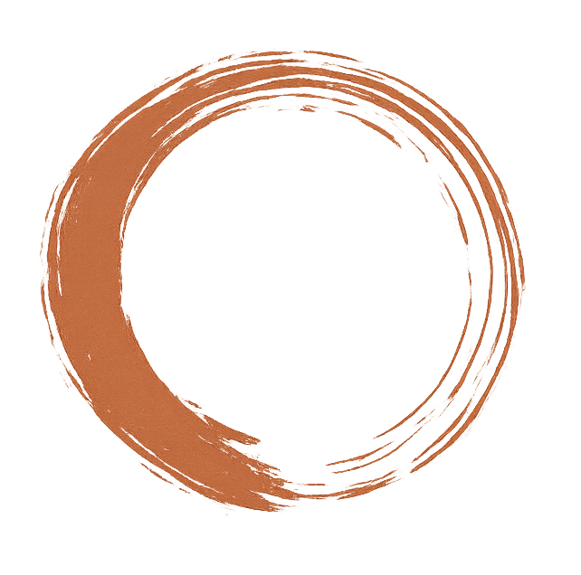
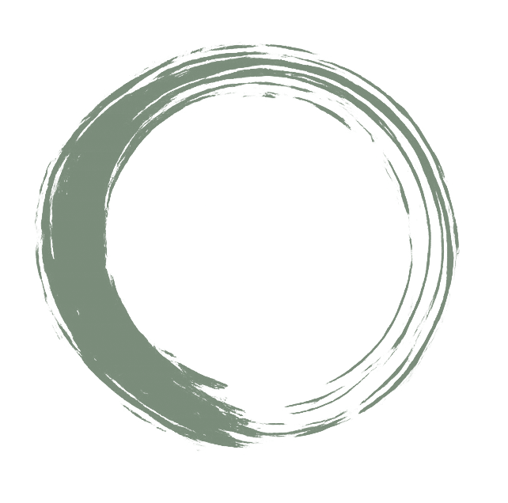
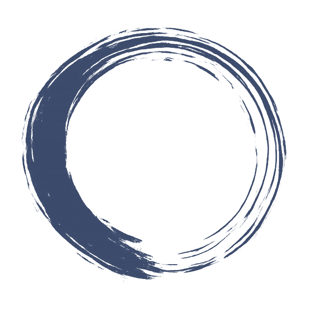
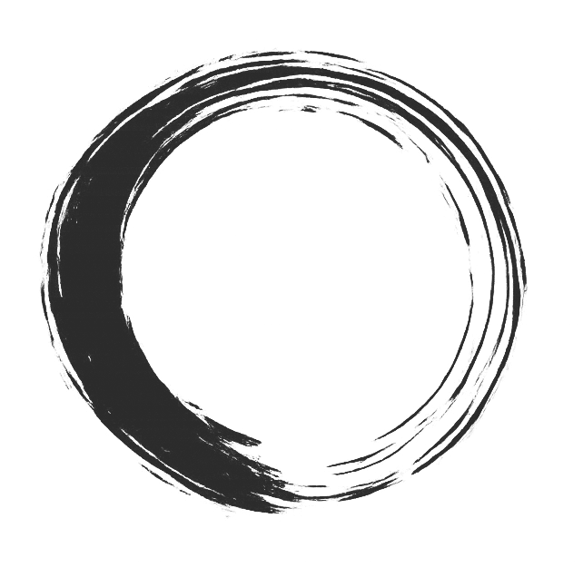
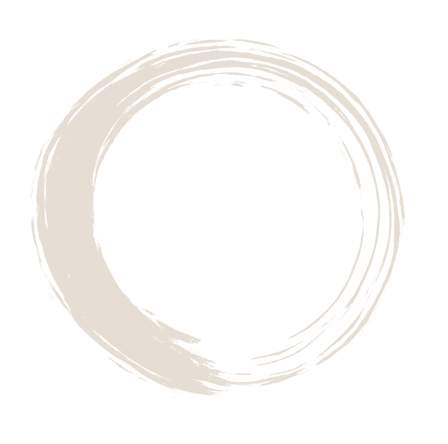

Kultur und Identität
Wer sind wir hier?
Hochschulseminar · Woche 1
Kulturelle Identitäten, Erinnerungsorte und grenzüberschreitende Begegnungen im deutsch-polnisch-tschechischen Raum
Einstieg
Das Dreiländereck DE-PL-CZ ist kein neutraler Raum — es ist ein Labor für Identität, Erinnerung und Begegnung.
Aufbau
Wer sind wir hier?
Was erinnern wir?
Wer gestaltet Begegnung?
Format
Beide Wochen zählen als Lehrveranstaltung.
Kursartefakt
Euer gemeinsames Kursartefakt auf Padlet




Leistung

Prüft Begriffe, Theorien und regionale Beispiele aus dem Dreiländereck.
fließen in die Mitarbeitsnote ein
verfügbar auf der Kursseite
Woche 1
Referatsvergabe
| TK | Thema | Gruppe |
|---|---|---|
| 1a | Hybridität und Identitätsbildung in Dritten Orten | Gruppe 1 |
| 1b | Traditionen im Wandel | Gruppe 2 |
| 2a | Geteilte Geschichte – gemeinsame Erinnerung? | Gruppe 3 |
| 2b | Grenzüberschreitende Kulturorte | Gruppe 1 |
| 3a | Wer gestaltet Begegnung? | Gruppe 2 |
| 3b | Begegnung in der Praxis | Gruppe 3 |